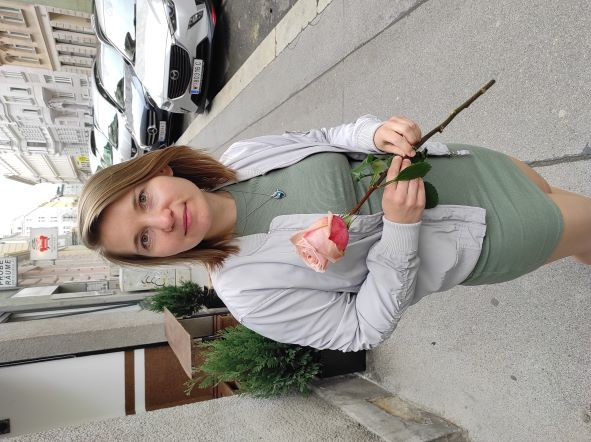

Добрый день! Я начинающий тестировщик! Желаемая должность: QA engineer manual
Давайте познакомимся
Обо мне
Меня зовут Юлия Балычева, я родилась в Украине, но последние 13 лет живу в Австрии, в городе Вена со своей семьей.
Мне 37 лет и многое в жизни уже достигнуто, поэтому есть время и желание пробовать себя и развиваться в новых направлениях.
Профессиональный опыт и образование
Высшее образование получила в Украине, окончила Краматорский экономико-гуманитарный институт (КЭГИ) по специальности "Психология", затем прошла австрийские курсы и работала воспитателем в детском саду. Последние пару лет развиваюсь в области озвучивания и делаю аудиокниги для книжного электронного магазина ЛитРес. После того, как записала аудиокурс по тестированию для одной американской школы, начала обучение тестированию в школе Skillfactory, хочу освоить профессию тестировщика и работать удаленно на дому.
Хобби
Люблю путешествовать, заниматься спортом, ходить в походы с большой компанией, проводить время с детьми, а также с удовольствием занимаюсь фото и видео монтажем и записываю аудиокниги для своего ютуб канала.
Контакты
juliabalycheva.tebel@gmai.com
телефон +43 650 8831380